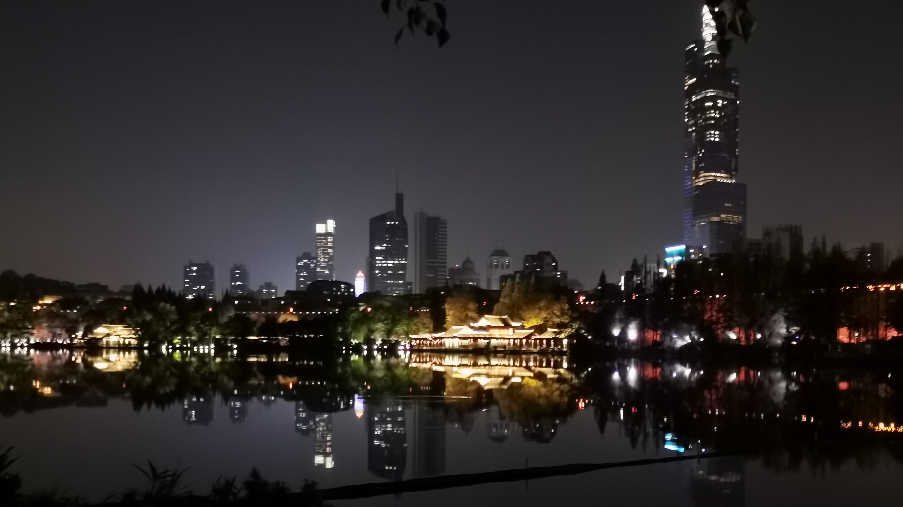
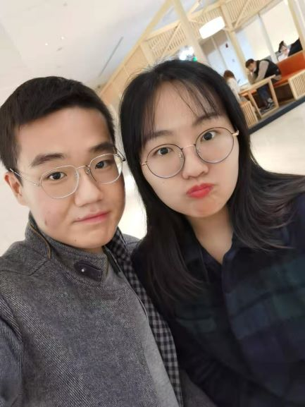
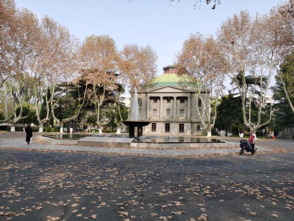
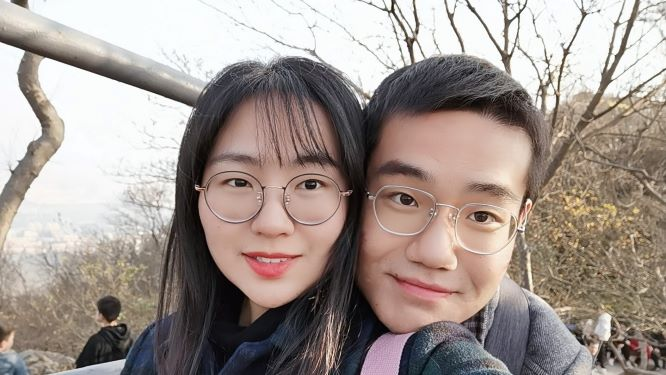
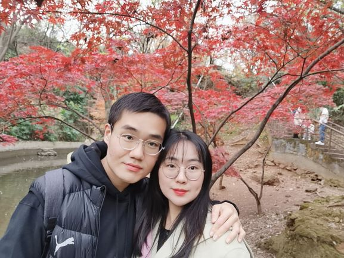
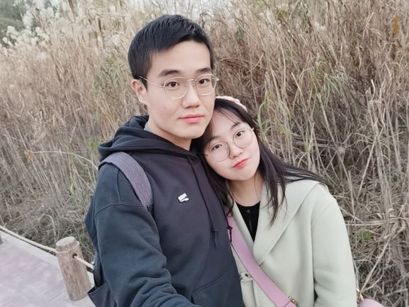

Love Letter
今夕何夕，
见此良人。
-
Dear Mrs. Yang:
今天是2020年12月14日，星期一，这是一个特别的日子，在一个月前是我们的第一次约会的日子，所以我也想要在今天写一封我给你的第一封情书。
-

还记得我们第一见面去了哪些地方嘛？我们中午去景枫吃了饭，下午去了老门东和夫子庙吃了下午茶，最后还去了玄武湖逛了逛。我记得那一天的时间过的很快，不知不觉就到了晚上，一路上我们聊了很多很多，从蚌埠的小吃到高考的经历、再到感情的变迁，自此我有了想要守护你的想法。
-

这是我们的第一张合照，在南京博物院四楼的咖啡店拍的，哈哈哈哈，也是我发给我爸妈的那一张照片。虽然宝贝很嫌弃我的拍照技术，但是无论如何我的宝贝是坠好看滴！
-

这是在我们学校的四牌楼校区拍的照片，这是在我们去的前一天踩点的时候拍的照片，因为带你去牌区的那天是从南博回来的时候临时起意，带你进学校溜达溜达。不过在六朝松前，应该给你留了深刻的印象，嘿嘿。
-

这是我们在紫金山顶拍的照片，宝贝的体力还是很棒的，中途没有怎么休息就登顶了，看来有机会可以带你爬一些很高的山啦~顺便提一句，爬到山顶吃的KFC确实比山下要好吃！
-

这是在红山动物园拍的照片，这应该是我小学之后第一次来动物园了（手动狗头），不同的是这次是带靓靓小朋友一起的，印象很深的是熊猫真的好可爱！我都想和他抢竹子恰！我们去的时候银杏树也黄了，枫叶也红了，弥补了今年错过了去栖霞山的遗憾。
-

这是在南京鱼嘴湿地公园拍的照片，一起在这里看了南京的夕阳，站在湖边抱着你看夕阳，感觉炒鸡好！下次争取抱着你看日出！
-

今年发生了很多巧合（或者说是缘分的事），首先是遇见了你，恰巧我们也是一个家乡的人，然后也恰巧和你一起经历了2020年南京的第一场雪，这是我们第一次“共白头”叭，嘿嘿。
-
2020年本应该是一个充满着希望的年份，但是今年以来，新冠疫情的影响，世界都在面临着变革，在危机中也见证了很多事情，认清了很多事实。我以为我研究生就会这么孤身一人的度过了，但是恰巧在2020年的尾巴里遇到了你，一切都是刚刚好，我也相信了命运总是起起伏伏的，人总有运气好的时候，嘿嘿。
未来很长，我们的爱情也才刚刚开始。宝贝，可以让我守护你的未来嘛？
自此之后，我们几乎每周末都可以一起吃饭一起玩。我们在一个月的时间中，在很多地方留下了身影。我们去了南京博物院、东南大学四牌楼校区、紫金山天文台、红山动物园、鱼嘴湿地公园等等（画外音：我俩还挺能跑的，一个月跑了别人半年玩的地方）。
爱你的：叶晨晨